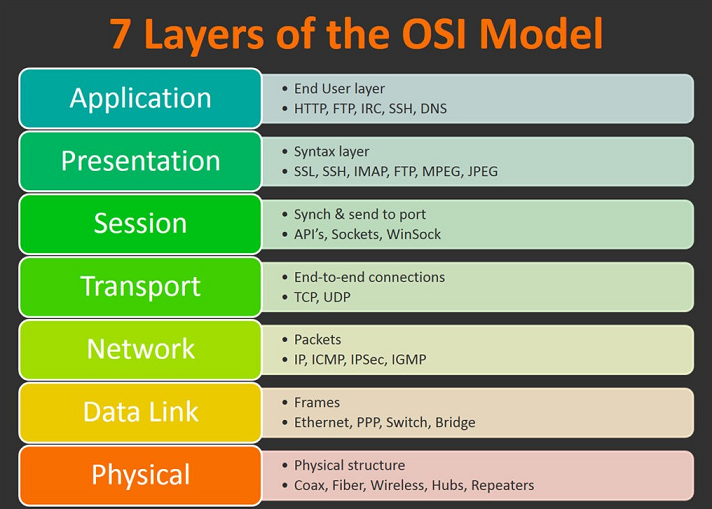

2020/11/05
- Packet Filtering is a very important part of packet analysis especially when you have a very
large number of packets.
- You can apply display captures in two ways: through the analyze tab and at the filter bar at
the top of the packet capture.
-
- and - operator:
and / &&
- or - operator: or / ||
- equals - operator: eq / ==
- not equal - operator: ne / !=
- greater than - operator: gt /
>
- less than - operator: lt / <
-
- Filtering by IP:
-
- This filter will allow you to comb through the traffic and only see packets
with a specific IP address contained in those packets, whether it be from
the source or destination.
-
- Syntax: ip.addr == <IP
Address>
-
- Filtering by SRC and DST:
-
- These filters allow us to filter the traffic by the source and destination
from which the traffic is coming from.
-
- Syntax: ip.src == <SRC IP
Address> and ip.dst == <DST IP Address>
-
- Filtering by TCP Protocols:
-
- This allows you to set a port or protocol to filter by and can be handy when
trying to keep track of an unusual protocol or port being used.
- Wireshark can filter by both port numbers as well as protocol names.
-
- Syntax: tcp.port eq <Port #> or
<Protocol Name>
-
- Filtering by UDP Protocols: filter by UDP ports by changing the prefix
from tcp to udp
-
- Syntax: udp.port eq <Port #> or
<Protocol Name>
- Packet
Details
- Packets consist of 5 to 7 layers based on the OSI model.
- 
- 7 distinct layers to the packet:
-
- frame/packet
- source [MAC]
- source [IP]
- protocol
- protocol errors
- application protocol
- application data
-

- Frame (Layer 1)
-
- This will show you what frame / packet you are looking at as well as details
specific to the Physical layer of the OSI model.

- Source [MAC] (Layer 2)
-
- This will show you the source and destination MAC Addresses; from the Data
Link layer of the OSI model.

- Source [IP] (Layer 3)
-
- This will show you the source and destination IPv4 Addresses; from the Network
layer of the OSI model.

- Protocol (Layer 4)
-
- This will show you details of the protocol used (UDP/TCP) along with source and
destination ports; from the Transport layer of the OSI model.

- Protocol Errors
-
- This is a continuation of the 4th layer showing specific segments from TCP that
needed to be reassembled.

- Application Protocol (Layer 5)
-
- This will show details specific to the protocol being used such HTTP, FTP, SMB, etc.
From the Application layer of the OSI model.

- Application Data
-
- This is an extension of layer 5 that can show the application-specific data.

- ARP Overview
- Address Resolution Protocol is a Layer 2 protocol that is used to connect IP
Addresses with MAC Addresses.
- They will contain REQUEST messages and RESPONSE messages.
- To identify packets the message header will contain one of two operation codes:
-

- packet capture of multiple ARP requests and replies
- Most devices will identify themselves or Wireshark will identify Intel_78, as an
example of suspicious traffic:
-
- many requests from an unrecognized source
- Resolve physical addresses:
-
- navigate to View > Name Resolution > Ensure that Resolve Physical Addresses is
checked

- Cisco device is sending ARP Requests
- ARP Traffic
Overview
- ARP Request Packets:

- The most important details of the packet are outlined in red
- The Opcode is short for operation code and will you tell you whether
it is an ARP Request or Reply.
- The second outlined detail is to where the packet is requesting to, in this case, it
is broadcasting the request to all.
- ARP Reply Packets:

-
- The Opcode is an ARP Reply packet.
- Other useful information like the MAC and IP Address that was sent
along with the reply (know that this was the information sent along with the message).
- Practical ARP Packet
Analysis
- #1 What is the Opcode for Packet 6?

- #2 What is the source MAC Address of Packet 19?

- #3 What 4 packets are Reply packets?

- #4 What IP Address is at 80:fb:06:f0:45:d7?

- ICMP Overview
- Internet Control Message Protocol is used to analyze various nodes on a network.
- Most commonly used with utilities like ping and traceroute.

- ping - we can see a request to the server from ICMP, then a
reply from the server
- ICMP Traffic
Overview
- ICMP request:
- Important things within the packet details:
-
- type
-
- A type that equals 8 means that it is a request packet, if it is
equal to 0 it is a reply packet.
- code of the packet
-
- When these codes are altered or do not seem correct that is typically a sign
of suspicious activity.
- timestamp
-
- The timestamp can be useful for identifying
the time the ping was requested it can also be useful to identify suspicious
activity in some cases.
- data
-
- We can also look at the data string which will
typically just be a random data string.

- packet details for a ping request packet
- ICMP Reply:
- Difference that distinguishes a reply packet is the code (in this case, you can see it is 0
- reply packet)
- The same analysis techniques for Request packet.
- The main difference will be the packet type.
- reply packet
- Practical ICMP Packet Analysis
- #1 What is the type for packet 4?

- #2 What is the type for packet 5?

- #3 What is the timestamp for packet 12, only including
month day and year?
-
- Wireshark bases it’s time off of your devices time
zone, if your answer is wrong try one day more or less.

- #4 What is the full data string for packet 18?

- TCP Overview
- Transmission Control Protocol handles the delivery of packets including
sequencing and errors.
- Below you can see a sample of a

- Nmap scan - scanning port 80 and 443 (port is closed due to
the RST, ACK packet in red)
- TCP Traffic
Overview
- A common thing that you will see when analyzing TCP packets is
known as the TCP handshake, which you should already be familiar with. It includes a series
of packets: syn, synack, ack; That allows devices to establish a connection.

- Typically when this handshake is out of order or when it
includes other packets like an RST packet, something suspicious or wrong is happening in the
network. The Nmap scan in the section above is a perfect example of this.
- TCP Packet
Analysis

- packet details for an SYN packet
- The main thing that we want to look for when looking at a TCP packet is the sequence
number and acknowledgment number.
- In this case, we see that the port was not open because the acknowledgment
number is 0.
- Within Wireshark, we can also see the original sequence number by navigating to
edit > preferences > protocols > TCP > relative sequence numbers (uncheck
boxes).


- DNS Overview
- Domain Name Service protocol is used to resolves names with IP addresses.
- Things outlined below that you should keep in the back of your mind when analyzing DNS
packets:
-
- Query-Response
- DNS-Servers Only
- UDP
- If anyone of these is out of place then the packets should be looked at further and should
be considered suspicious.

- multiple DNS queries and responses
- Instantly looking at the packets we can see what they are
querying, this can be useful when you have many packets and need to identify suspicious or
unusual traffic quickly.
- DNS Traffic
Overview
- DNS Query:
- We have two bits of information that we can use to analyze the packet.
- The first bit of information is where the query is originating from
-
- UDP 53 which means that this packet passes that check
- if it was TCP 53 then it should be considered suspicious traffic and needs to
analyzed further
- Queryies can be useful with other information to build a story of what happened

- DNS Response:
- Response packet, similar to the query packet
-
- but it includes an answer which can be used to verify the query

- Practical DNS Packet
Analysis
- #1 What is being queried in packet 1?

- #2 What site is being queried in packet 26?
- #3 What is the Transaction ID for packet 26?

- HTTP Overview
- Hypertext Transfer Protocol is a commonly used port for the world wide web and
used by some websites
- HTTP is used to send GET and POST requests to a web
server in order to receive things like webpages.
- Knowing how to analyze HTTP can be helpful to quickly spot things like SQLi, Web
Shells, and other web-related attack vectors.
- HTTP Traffic Overview
- Does not include any handshakes or prerequisites before communication.

- Looking at an HTTP packet we can easily gather information since the data stream is not
encrypted.
- Some of the important information we can gather from the packet is the Request URI, File
Data, Server.
- Practical HTTP Packet
Analysis


-
- details of one of the HTTP requests packet
- From this packet we can identify some very important information like the
host, user-agent, requested URI, and response.
- Useful feature in Wireshark to organize the protocols present in a capture
the Protocol Hierarchy.
-
- Navigate to Statistics > Protocol Hierarchy

- Useful in practical applications like threat hunting to identify
discrepancies in packet captures.
- Export HTTP Object will allow us to organize all requested URIs in the
capture
-
- Navigate to File > Export Objects > HTTP
- Useful to quickly identify possible discrepancies in captures.
- Endpoints allows the user to organize all endpoints and IPs found
within a specific capture.
-
- Navigate to Statistics > Endpoints

- Useful to identify where a discrepancy is originating from.
- #1 What percent of packets originate from Domain Name
System?

- #2 What endpoint ends in .237?

- #3 What is the user-agent listed in packet 4?

- #4 Looking at the data stream what is the full request URI
from packet 18?

- #5 What domain name was requested from packet 38?
- #6 Looking at the data stream what is the full request URI
from packet 38?

- HTTPS Overview
- Hypertext Transfer Protocol Secure is an extension of the HTT).
- It is used for secure communication over a computer network, and is widely used on the
Internet.
- The communication protocol is encrypted using Transport Layer Security (TLS) or,
formerly, Secure Sockets Layer (SSL).
- HTTPS Traffic
Overview
- Before sending encrypted information the client and server need to agree upon various steps
in order to make a secure tunnel.
-
- Client and server agree on a protocol version
- Client and server select a cryptographic algorithm
- The client and server can authenticate to each other; this step is optional
- Creates a secure tunnel with a public key
-
- Client Hello packet showing the SSLv2 Record Layer,
Handshake Type, and SSL Version

-
- Server Hello packet is sending similar information
as the Client Hello packet however this time it includes session details and SSL
certificate information
-
- Client Key Exchange packet, this part of the
handshake will determine the public key to use to encrypt further messages
between the Client and Server

-
- Server confirms the public key and create the
secure tunnel, all traffic after this point will be encrypted based on the
agreed-upon specifications listed above

-
- The traffic between the Client and the Server is
now encrypted and you will need the secret key in order to decrypt the data
stream being sent between the two hosts.
- Practical HTTPS Packet
Analysis

- All of the requests are encrypted: HTTPS handshake as well as the encrypted requests
themselves.
- Let's take a closer look at one of the encrypted requests: Packet 11.

- You can use an RSA key in Wireshark in order to view the data unencrypted.
-
- Navigate to Edit > Preferences > Protocols > TLS > [+]
- You will need to fill in the various sections on the menu with the following
preferences:
-
-
- IP Address: 127.0.0.1
- Port: start_tls
- Protocol: http
- Keyfile: RSA key location

- RSA key imported into Wireshark : data stream is now unencrypted.
- HTTP requests in now unencrypted data streams.

- Important information such as the request URI and the User-Agent are
useful in practical applications of Wireshark such as threat hunting and
network administration.
- Organize the data stream
-
- Navigate to File > Export Objects > HTTP

- #1 Looking at the data stream what is the full request URI
for packet 31?

- #2 Looking at the data stream was is the full request URI
for packet 50?

- #3 What is the User-Agent listed in packet 50?

- Zerologon (CVE-2020-1472)
PCAP Overview
- The scenario within the PCAP file contains a Windows Domain Controller with a
private IP of 192.168.100.6 and an attacker with the private IP of
192.168.100.128.

- Identifying the
Attacker
- Some things that may be out of the ordinary:
-
- First, we see some normal traffic from OpenVPN, ARP, etc.
- Then identify unknown protocols in this case DCERPC and EPM.
- 192.168.100.128 is sending all of the requests, device is the attacker.
- Ccontinue looking at packets coming from this IP to narrow down our hunt.
- Zerologon POC Connection
Analysis

- Filter for the src of the attacker IP
- When analyzing PCAPS we need to be aware of Indicators of Compromise (IOCs)
- Known as Threat Intelligence
-
- Zerologon exploit uses multiple RPC connections, and DCERPC requests to change the
machine account password, which could be verified with the PCAP.
- Secretsdump SMB
Analysis

- SMB2/3 traffic and DRSUAPI traffic
- With prior knowledge of the attack we know that it uses secretsdump to dump hashes.
- Secretsdump abuses SMB2/3 and DRSUAPI to do this, so we can assume that
this traffic is secretsdump.